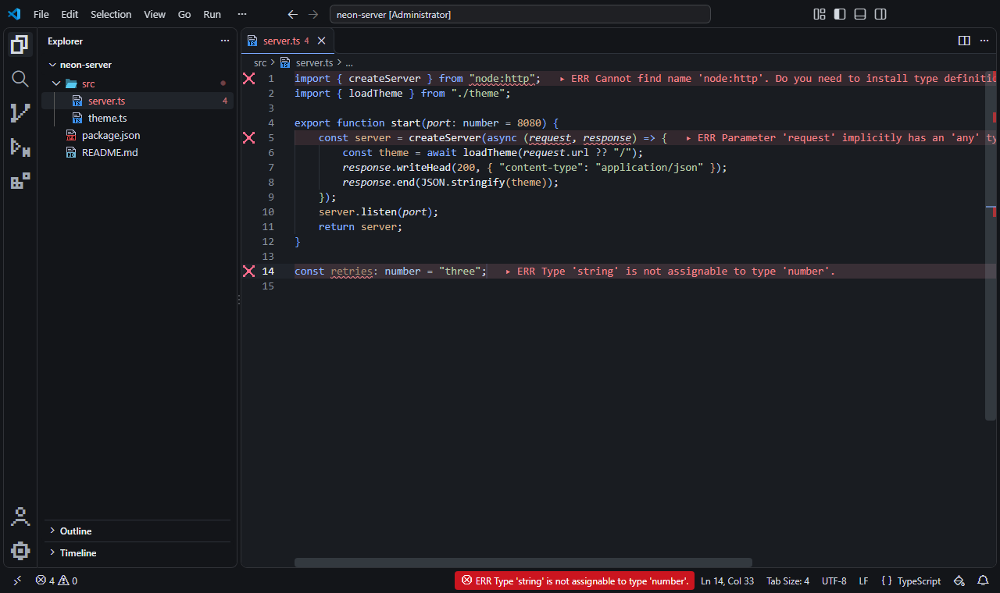
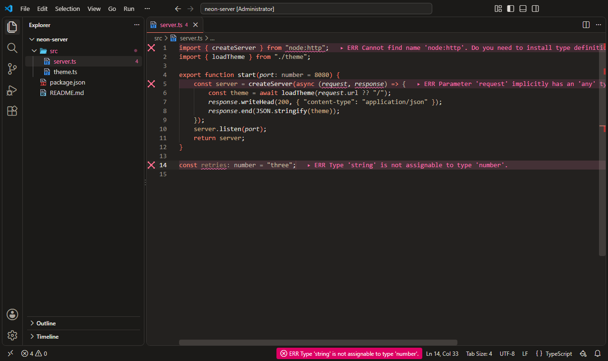
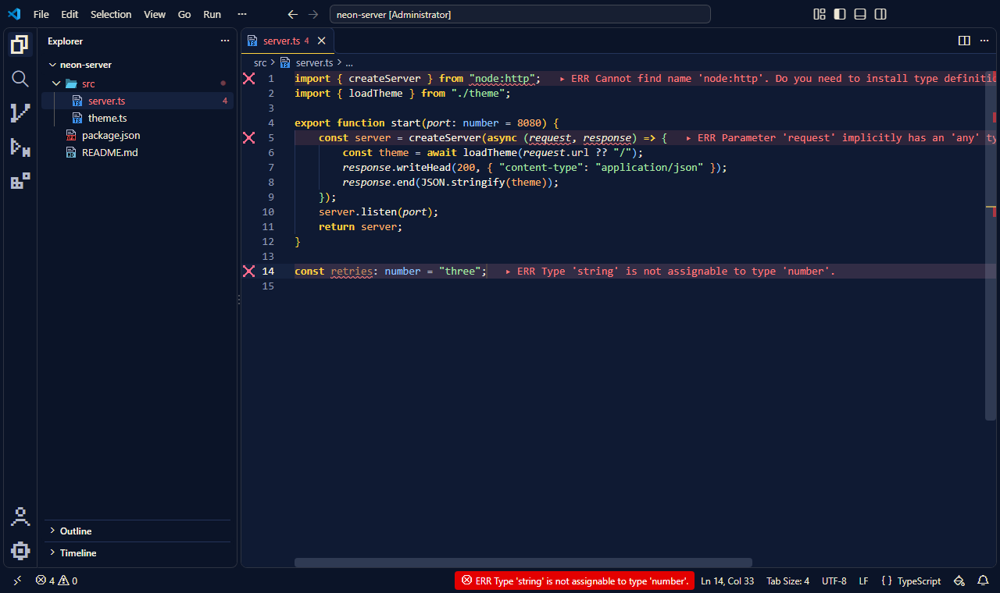
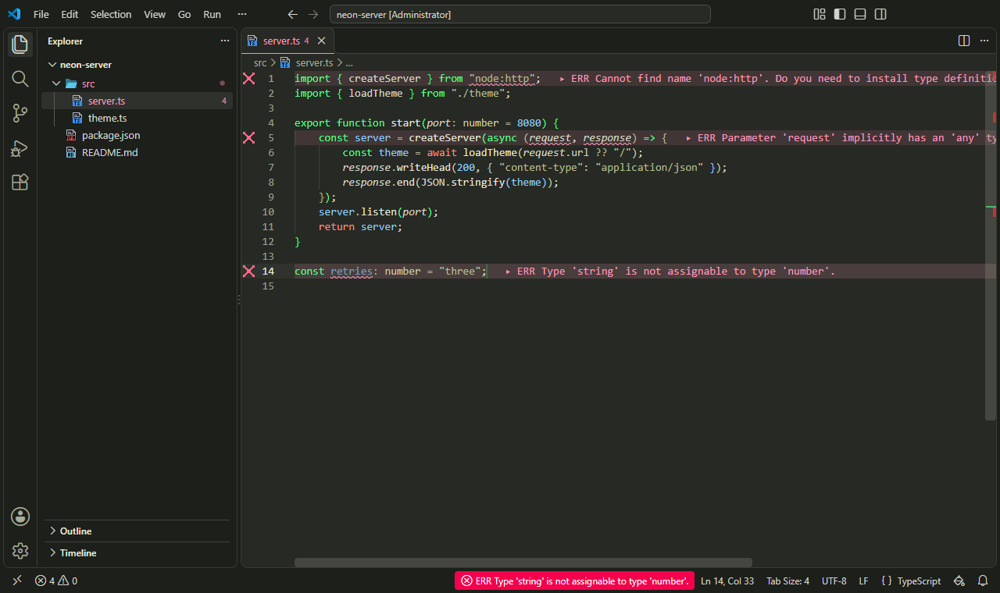
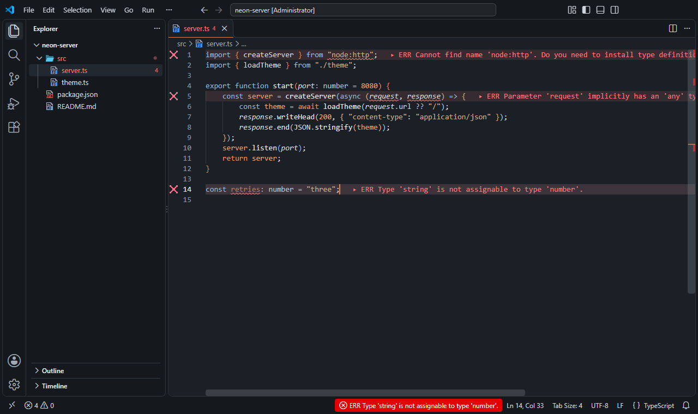
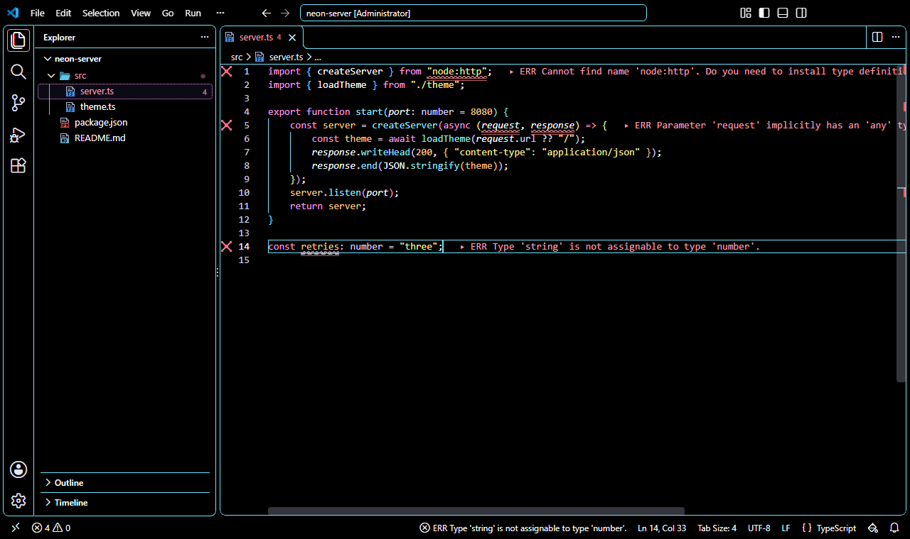

Presets & Themes
Stylesmith has twelve color themes you can use on their own, and eleven presets that combine a theme with a file icon theme and native VS Code settings.
Presets
A preset is a complete look: a color theme, a file icon theme and native VS Code settings that belong together, applied in one step and undone in one step.
How presets work
Apply
Choose a preset from the Stylesmith button in the status bar, or run Stylesmith: Apply Preset…. In one step it sets the color theme, the file icon theme and the settings listed on its card.
Undo
Run Stylesmith: Disable to put back your own color theme, icons and settings. If you changed one of them yourself after applying the preset, your change is kept.
What it leaves to you
A preset doesn’t choose a font or change Problem Lens. Each card recommends a font: choose it in the Stylesmith menu, which can install it for you after you confirm.
Compare presets
| Preset | Smooth cursor | Highlight current line | Bracket pair guides | Compact layout | Block editor cursor | Block terminal cursor | Dim unfocused editors | Recommended font |
|---|---|---|---|---|---|---|---|---|
| Phosphor Terminal | off | on | on | on | on | on | off | DepartureMono Nerd Font |
| Amber Monitor | off | on | on | on | on | on | off | BlexMono Nerd Font |
| Black ICE | on | on | on | off | off | off | off | ShureTechMono Nerd Font |
| Night City | on | on | on | off | off | on | off | JetBrainsMono Nerd Font |
| Monolith | on | on | on | off | off | off | on | GeistMono Nerd Font |
| Glass Lab | on | on | on | off | off | off | on | GeistMono Nerd Font |
| Vault | on | on | on | off | off | on | off | SpaceMono Nerd Font |
| Simulation | on | on | on | off | off | on | off | JetBrainsMono Nerd Font |
| Steel and Rust | on | on | on | off | off | off | on | ShureTechMono Nerd Font |
| Daylight | on | on | off | off | off | off | off | JetBrainsMono Nerd Font |
| High Contrast | off | on | on | off | off | off | off | AtkynsonMono Nerd Font |
Retro terminals
Monitors and terminals of the 1970s and 80s, each true to the color of its phosphor.
-

Phosphor Terminal
A late-1970s green-phosphor video terminal: green on near-black, pixel icons in the same greens, a dense, compact layout, and block cursors that blink without animation.
The story
Where it comes from. IBM's 5151 monochrome display (1981) drew its text in green P39 phosphor that kept glowing after the beam had moved on. It cut flicker, and left a faint trace whenever text scrolled.
The colors. Everything stays within that green. Keywords are the brightest strokes, strings and functions sit in softer greens, and comments are dimmed like a fading trace on the glass.
The settings. Block cursors in the editor and the terminal blink on and off without animation, and the compact layout packs the screen the way terminals of the time did.
- Color theme
- Stylesmith Phosphor
- File icons
- Stylesmith Pixel Phosphor
- Settings on
- Highlight current line, Bracket pair guides, Compact layout, Block editor cursor, Block terminal cursor
- Recommended font
- DepartureMono Nerd Font
-

Amber Monitor
An early-1980s amber monochrome monitor: warm amber tones, matching pixel icons, a compact layout, and block cursors that blink without animation.
The story
Where it comes from. By the early 1980s, a monitor could glow amber as well as green or white: DEC's VR201, for one, was sold with white, green or amber (P134) phosphor.
The colors. Warm amber and orange on a dark brown-black. Keywords burn brightest, numbers lean toward orange, and comments fade toward brown.
The settings. The same mechanical feel as Phosphor Terminal: block cursors that blink without animation, and a compact layout.
- Color theme
- Stylesmith Amber
- File icons
- Stylesmith Pixel Amber
- Settings on
- Highlight current line, Bracket pair guides, Compact layout, Block editor cursor, Block terminal cursor
- Recommended font
- BlexMono Nerd Font
-

Black ICE
A cold white-phosphor screen with ice-blue accents and matching pixel icons, and only the calmer editor settings.
The story
Where it comes from. DEC's VT100 terminal (1978) glowed in white P4 phosphor. A few years later, William Gibson's stories, from Burning Chrome to Neuromancer, gave cyberspace its ICE: intrusion countermeasures electronics, the cold walls around guarded data, a term Gibson credited to Tom Maddox.
The colors. Cold white phosphor on a blue-black screen: blue-white text and syntax and frost-cyan keywords. Only errors and deleted lines break the ice, in warm colors.
The settings. Only the calm settings: smooth cursor, current-line highlight and bracket guides. Nothing moves that doesn't have to.
- Color theme
- Stylesmith ICE
- File icons
- Stylesmith Pixel ICE
- Settings on
- Smooth cursor, Highlight current line, Bracket pair guides
- Recommended font
- ShureTechMono Nerd Font
Inspired by film
Moods from screen worlds, described in our own words.
-

Night City
Neon pinks and cyans on deep indigo, the look of a city at night, with pixel file icons and a block cursor in the terminal.
The story
Where it comes from. In William Gibson's Neuromancer (1984), Night City is the outlaw district beside Chiba, where the neon never goes off. The same rain-wet, sign-lit streets run through the cyberpunk films of the 1980s.
The colors. Hot pink and cyan accents glow against a deep indigo night, with yellow strings like light from a passing sign. Comments sink back into the blue, like shopfronts out of focus.
The settings. The smooth cursor and current-line highlight keep the city calm while you work; a block cursor in the terminal is the one nod to the machines of the era.
- Color theme
- Stylesmith Neon Night
- File icons
- Stylesmith Pixel
- Settings on
- Smooth cursor, Highlight current line, Bracket pair guides, Block terminal cursor
- Recommended font
- JetBrainsMono Nerd Font
-

Monolith
Blue-grey stone with one deep blue accent, and only the quiet editor settings. Editors you aren't working in are dimmed, so the one in use stands out.
The story
Where it comes from. Ted Chiang's novella Story of Your Life (1998), and the film made from it, imagine a linguist learning a language written in rings of ink, in grey rooms full of fog and patience.
The colors. Blue-grey stone and one deep blue accent. Syntax stays in quiet greys and sage, so the single accent carries the structure.
The settings. Only the quiet settings, and the editors you aren't working in are dimmed, as if in fog, so the one in use stands out.
- Color theme
- Stylesmith Monolith
- File icons
- Stylesmith Pixel
- Settings on
- Smooth cursor, Highlight current line, Bracket pair guides, Dim unfocused editors
- Recommended font
- GeistMono Nerd Font
-

Glass Lab
Warm concrete greys, soft off-white text and one coral accent, with the quiet editor settings and dimmed unfocused editors.
The story
Where it comes from. Science-fiction cinema of the 2010s imagined a research lab of glass and concrete hidden in a forest: quiet, precise, minimal and a little unsettling, where a single color marks everything that matters.
The colors. Warm concrete greys, soft off-white text and one coral accent. Errors lean magenta and deleted lines orange, so neither is mistaken for the accent.
The settings. Only the quiet settings, with unfocused editors dimmed, as in Monolith: the lab stays still while you think.
- Color theme
- Stylesmith Glass Lab
- File icons
- Stylesmith Pixel
- Settings on
- Smooth cursor, Highlight current line, Bracket pair guides, Dim unfocused editors
- Recommended font
- GeistMono Nerd Font
-

Vault
Deep navy and bright vault yellow, an optimistic 1950s vision of the future, with a block cursor in the terminal.
The story
Where it comes from. The 1950s pictured the atomic future with confidence: clean institutional design, bright primaries and a cheerful voice on the loudspeaker, even deep underground. Decades later, games turned that optimism into a whole aesthetic.
The colors. A deep navy shelter, warm off-white text and a bright vault yellow for keywords. Blue and yellow stay far apart with every kind of color blindness.
The settings. The calm settings, and a block cursor in the terminal, like the consoles of a shelter built to last.
- Color theme
- Stylesmith Vault
- File icons
- Stylesmith Pixel
- Settings on
- Smooth cursor, Highlight current line, Bracket pair guides, Block terminal cursor
- Recommended font
- SpaceMono Nerd Font
-

Simulation
A greyed, green-cast city where only the code glows: a late-1990s film world, with a block cursor in the terminal.
The story
Where it comes from. Cyberpunk cinema of the late 1990s graded its simulated world green: grey office towers, rain and black coats under a sickly cast, while the code itself fell bright down black screens.
The colors. A charcoal background with a faint green cast, and greyed text and syntax, like the color grade. Only keywords glow in code green. A warm red marks return, break and throw, the moments that change what happens, and blue marks constants.
The settings. The calm settings, and a block cursor in the terminal, where the code lives.
- Color theme
- Stylesmith Simulation
- File icons
- Stylesmith Pixel
- Settings on
- Smooth cursor, Highlight current line, Bracket pair guides, Block terminal cursor
- Recommended font
- JetBrainsMono Nerd Font
-

Steel and Rust
Cold blue-grey steel and dim light, with rust for what matters: the real world outside the simulation, with dimmed unfocused editors.
The story
Where it comes from. The same films showed the world outside the simulation as cold, dim and worn: steel corridors, blue-grey light and rust, where people lived after waking up.
The colors. Cold blue-grey steel and dim light. Keywords are steel blue, strings a muted brass, and rust marks numbers and the keywords that change control flow.
The settings. Only the quiet settings, with unfocused editors dimmed, like the low light of a ship's corridor.
- Color theme
- Stylesmith Steel and Rust
- File icons
- Stylesmith Pixel
- Settings on
- Smooth cursor, Highlight current line, Bracket pair guides, Dim unfocused editors
- Recommended font
- ShureTechMono Nerd Font
Everyday
Bright rooms and maximum contrast.
-

Daylight
Dark ink on a warm, paper-like background for well-lit rooms, with pixel file icons.
The story
Where it comes from. Not every session happens at night. Daylight starts from the printed page: dark ink on warm paper, the oldest readable display there is.
The colors. Dark ink on a warm, paper-like background, with deep magenta, blue and brown accents chosen to stay readable in a bright room.
The settings. A smooth cursor and a current-line highlight, and nothing else to distract.
- Color theme
- Stylesmith Daylight
- File icons
- Stylesmith Pixel
- Settings on
- Smooth cursor, Highlight current line
- Recommended font
- JetBrainsMono Nerd Font
-

High Contrast
The high-contrast theme with borders around every area, no smooth cursor animation, and clear bracket guides.
The story
Where it comes from. Some days, and some eyes, need the most contrast a screen can give. This preset pairs well with AtkynsonMono, based on Atkinson Hyperlegible Mono, which the Braille Institute designed for readers with low vision.
The colors. White text on black with Neon Night's accents at full strength: every text color at least 7:1, and borders around every area.
The settings. No smooth cursor animation, a current-line highlight and clear bracket guides.
- Color theme
- Stylesmith Neon High Contrast
- File icons
- Stylesmith Pixel
- Settings on
- Highlight current line, Bracket pair guides
- Recommended font
- AtkynsonMono Nerd Font
The stories name the books and machines that inspired these looks: Neuromancer and Burning Chrome by William Gibson; Story of Your Life by Ted Chiang; the IBM 5151 display (IBM); the VT100 terminal and VR201 monitor (Digital Equipment Corporation). Names belong to their owners. Stylesmith is an independent project, not affiliated with or endorsed by any of them, and its themes are original work.
Color themes
Every theme works on its own: choose it in VS Code with Preferences: Color Theme, without a preset or any Stylesmith setting. The contrast shown is the measured ratio of the editor text to the editor background; the ergonomics page lists everything the theme tests check.
Retro terminals
-
// tally the night shift function total(hours) { return hours * 1.5 + " h"; }Stylesmith Phosphor
Dark
A late-1970s video terminal with green phosphor: one green range on near-black, with comments dimmed like a fading trace.
- Editor text contrast
- 14.8:1
- Used by preset
- Phosphor Terminal
-
// tally the night shift function total(hours) { return hours * 1.5 + " h"; }Stylesmith Amber
Dark
An early-1980s monochrome monitor with amber phosphor: warm amber and orange tones on a dark brown-black background.
- Editor text contrast
- 13.5:1
- Used by preset
- Amber Monitor
-
// tally the night shift function total(hours) { return hours * 1.5 + " h"; }Stylesmith ICE
Dark
A cold white-phosphor screen at night: blue-white text, accents and syntax on a dark blue-grey background.
- Editor text contrast
- 15.2:1
- Used by preset
- Black ICE
Inspired by film
-
// tally the night shift function total(hours) { return hours * 1.5 + " h"; }Stylesmith Neon Night
Dark
Neon signs reflected on wet streets at night: hot pink and cyan accents and yellow strings on a deep indigo background.
- Editor text contrast
- 14.8:1
- Used by preset
- Night City
-
// tally the night shift function total(hours) { return hours * 1.5 + " h"; }Stylesmith Monolith
Dark
Blue-grey stone and a single deep blue accent: a calm, minimal dark theme, with syntax in quiet greys and sage.
- Editor text contrast
- 12.2:1
- Used by preset
- Monolith
-
// tally the night shift function total(hours) { return hours * 1.5 + " h"; }Stylesmith Glass Lab
Dark
Warm concrete greys, soft off-white text and one coral accent. Errors lean magenta and deleted lines orange, so neither reads as the accent.
- Editor text contrast
- 11.5:1
- Used by preset
- Glass Lab
-
// tally the night shift function total(hours) { return hours * 1.5 + " h"; }Stylesmith Vault
Dark
A deep navy shelter with warm off-white text and a bright yellow accent: the upbeat look of a 1950s vision of the future.
- Editor text contrast
- 14.1:1
- Used by preset
- Vault
-
// tally the night shift function total(hours) { return hours * 1.5 + " h"; }Stylesmith Simulation
Dark
A charcoal city with a faint green cast: greyed text and syntax, keywords in glowing code green, a warm red for return, break and throw, and blue for constants.
- Editor text contrast
- 9.9:1
- Used by preset
- Simulation
-
// tally the night shift function total(hours) { return hours * 1.5 + " h"; }Stylesmith Steel and Rust
Dark
Cold blue-grey steel and dim light: steel-blue keywords, rust for numbers and control flow, and muted brass strings.
- Editor text contrast
- 11.2:1
- Used by preset
- Steel and Rust
Everyday
-
// tally the night shift function total(hours) { return hours * 1.5 + " h"; }Stylesmith Daylight
Light
Dark ink on a warm, paper-like background, with deep magenta, blue and brown accents. Made for well-lit rooms.
- Editor text contrast
- 14.2:1
- Used by preset
- Daylight
-
// tally the night shift function total(hours) { return hours * 1.5 + " h"; }Stylesmith Neon High Contrast
High contrast, dark
Neon Night's accents at full strength: white text on black, every text color at least 7:1, and borders around every area.
- Editor text contrast
- 21.0:1
- Used by preset
- High Contrast
-
// tally the night shift function total(hours) { return hours * 1.5 + " h"; }Stylesmith Daylight High Contrast
High contrast, light
Black text on white with dark, saturated accents, every text color at least 7:1, and borders around every area.
- Editor text contrast
- 21.0:1
- Used by preset
- None; use it on its own
Ready to style your editor?
Explore Stylesmith's built-in themes and review its security notes.
View Installation Guide